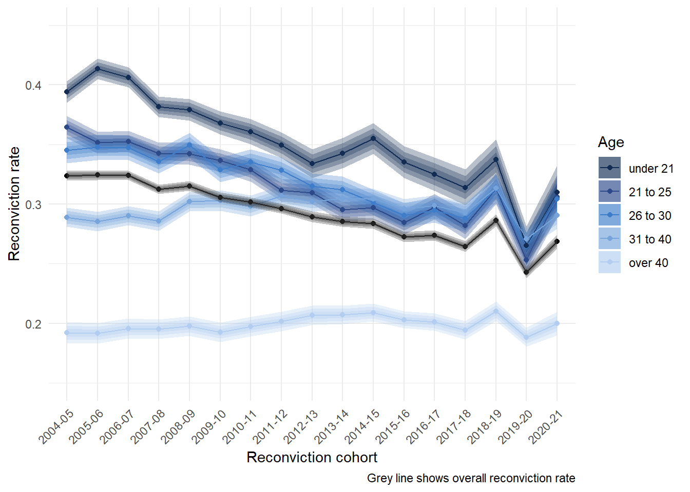
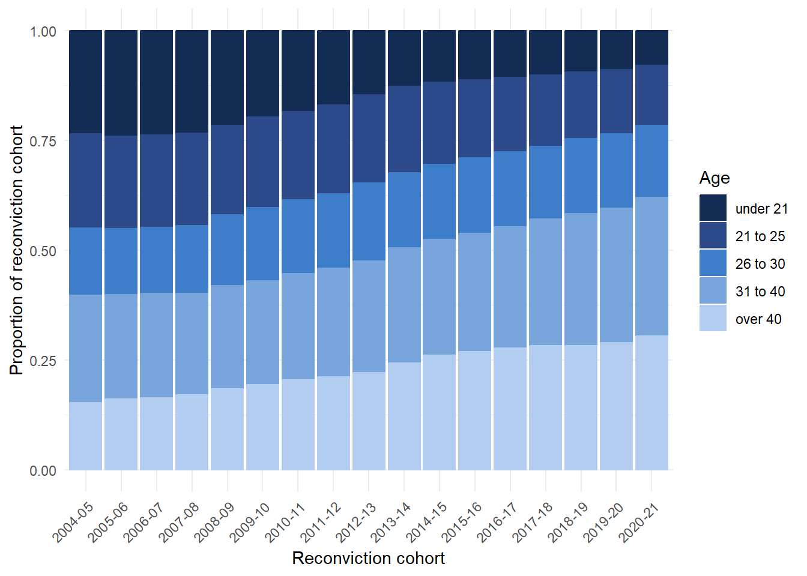
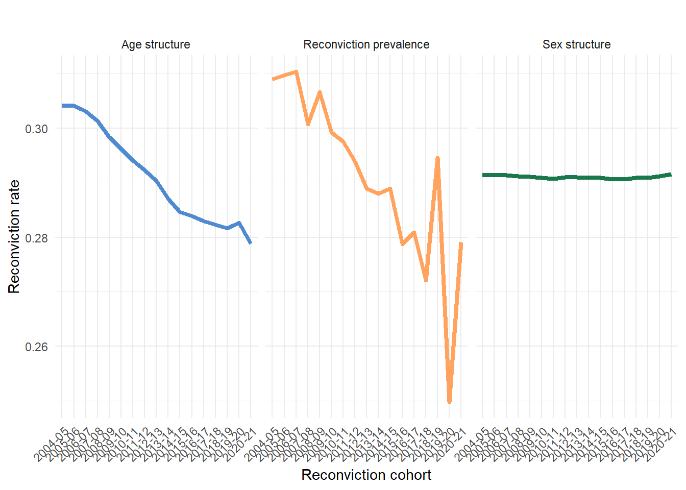

The changing demographics of reconvictions in Scotland: Initial results
This document contains initial results of ongoing work analysing the drivers of change in Scotland’s reconviction rate. A write-up of the full results is in preparation for submission to an academic journal. The results should be treated as preliminary and may be subject to change.
Overview
- Changing demographics of people convicted complicates comparisons in the aggregate reconviction rate over time
- The overall change in the reconvictions rate is partly due to fewer reconvictions and partly due to changing demographics
- This creates statistical bias in the aggregate reconviction rate if it’s used as a measure of ‘effectiveness’ of the justice system
Summary of results
- Young people used to have the highest reconviction rate of all age groups, but this is has fallen
- Those over 40 have consistently lower reconviction rates, but these have not fallen
- Young people also used to make up more of the reconviction cohorts
- In terms of the overall reconviction rate, a group of people with high levels of reconviction have been replaced by people with lower levels of reconviction
Research Question
- How much of the change in the overall reconviction rate in Scotland between 2004 and 2022 is attributable to changing demographics?
Data
We analyse data from ‘reconviciton cohorts’ in Scotland between 2004-2020. These are made available by Scottish Government as part of their Reconvictions Bulletin (Scottish Government 2024)
A reconviction cohort is “all offenders who either received a non-custodial conviction or were released from a custodial sentence in a given financial year, from the 1st April to the 31st March the following year” (Scottish Government 2024, p40)
There is nothing particularly special about these time points, and the same approach would work for other time periods and other characteristics
Some evidence that Scotland might be an extreme case here with larger demographic changes than in other countries (Matthews 2023)
Measures
- “The reconviction rate is presented as the percentage of offenders in the cohort who were reconvicted one or more times by a court within a specified follow up period from the date of the index conviction. For most reconviction analyses in this bulletin, the follow-up period is one year,” (Scottish Government 2024, p10)
- We decompose the overall reconviction rate by age and sex
- Age groups
- Under 21, 21 to 25, 26 to 30, 31 to 40, over 40
- Sex1
- Male, female
Method
The Das Gupta (1993) approach to standardization and decomposition calculates what the reconviction rate ‘would have been’ in each comparison year if each year had the average demographic composition
The differences between these ‘standardized’ rates to the observed rates are then used to calculate how much of the change in the observed rate is due to changes in the underlying reconviction rates for each age group, and how much is due to the change in the mix of the age groups
Analysis was conducted using the DasGuptR
Rpackage (King and Matthews 2025). Details of implementation will be provided in the full results.
Results
Change in reconviciton rate by age group
Change in the relative sizes of age group

What would the reconviction rate have been if there was only change in…

How much change in the reconviction rate is due to demographic mix?
| Standardization and Decomposition of reconviction rates in Scotland | ||||
|---|---|---|---|---|
| Impact of... |
Year
|
Difference in rates | % of crude difference | |
| 2004-05 | 2020-21 | |||
| Age | 0.31 | 0.28 | -0.03 | 49.06 |
| Sex | 0.29 | 0.29 | 0.00 | -0.22 |
| Reconviction | 0.31 | 0.28 | -0.03 | 51.16 |
| Crude rate | 0.32 | 0.27 | -0.06 | 100.00 |
| Data from Scottish Government (2024). Calculations authors' own. | ||||
Analysis
- We can attribute about 49% of the fall in the reconvictions rate in Scotland between 2004/05-2020/21 to demographic change in the population of people convicted, rather than falls in the reconviction rate per se.
- If you want to use the reconviction rate as a measure of sentencing effectiveness or similar, you would think the justice system is doing about twice as a good a job as it is
- In an optimistic reading the change in the mix of people being reconvicted could still be due to criminal justice practices (e.g. more diversion from prosecution for young people), but is not attributable to the ‘effectiveness’ of the criminal justice system in rehabilitating offenders - it is purely due to changes in the demographic mix of people being convicted in the first place
Discussion
- The crime drop in Scotland has led to a profound shift in the demographics of the people coming through the criminal justice system
- This shift is so pronounced that it affects our capacity to understand the ‘effectiveness’ of punishment through aggregate measures such as the overall reconviction rate
- A perspective which focuses on aggregate measures of the criminal justice system rather than the people involved with the system will be mislead by measures of system ‘performance’
- There are lots of other possible ways that demographic changes in crime may impact the functioning of the criminal justice system and public perceptions of crime
Limitations
- Coarse age categories could underplay the impact of changing age mix as a form of ‘measurement error’
- There might be other demographic or offence characteristics we are interested in jot included in this analysis (ethnicity; type of offence; type of sentence etc etc)
- The time periods selected are arbitrary and due to data availability
- These would be resolvable with access to the underlying Scottish Offenders Index data
References
Das Gupta, Prithwis. 1993. Standardization and Decomposition of Rates: A User’s Manual. 186. US Department of Commerce, Economics and Statistics Administration, Bureau of the Census.
King, Josiah, and Ben Matthews. 2025. “DasGuptR: Das Gupta Standardisation and Decomposition.” https://doi.org/10.32614/CRAN.package.DasGuptR.
Matthews, Ben. 2023. “The Age-Crime Curve and the Crime Drop in (Some of) Northern Europe,” June. https://benmatthewsed.github.io/age_crime_curve_europe/age_crime_curve_europe.html#/title-slide.
Scottish Government. 2024. “Reconviction Rates in Scotland: 2020-21 Offender Cohort.” Scottish Government.
Footnotes
Sex is “generally based on how a person presents and is recorded when a person’s details are entered into the [Criminal Histories System]. It is recorded for operational purposes, such as requirements for searching” (Scottish Government 2024, p44)↩︎